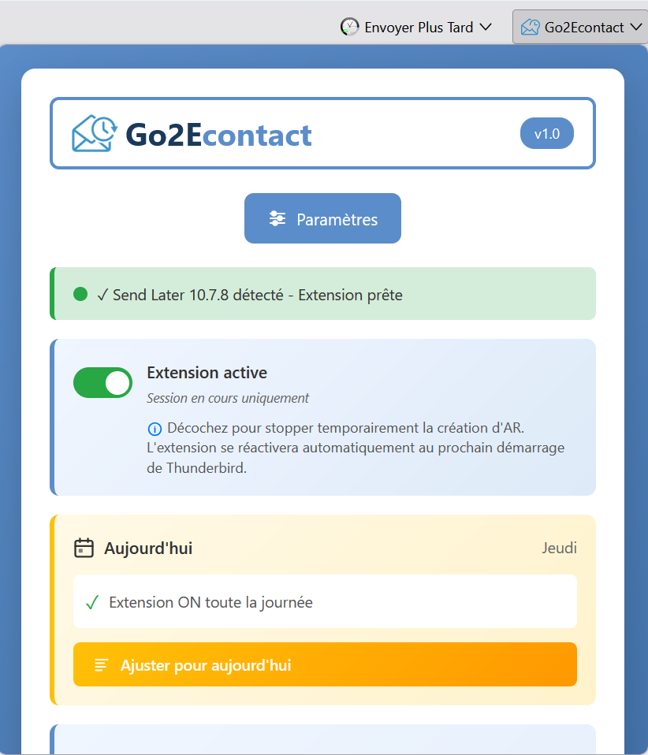
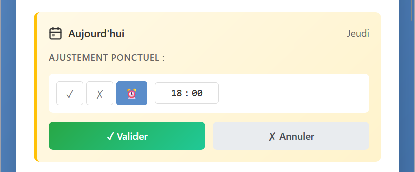
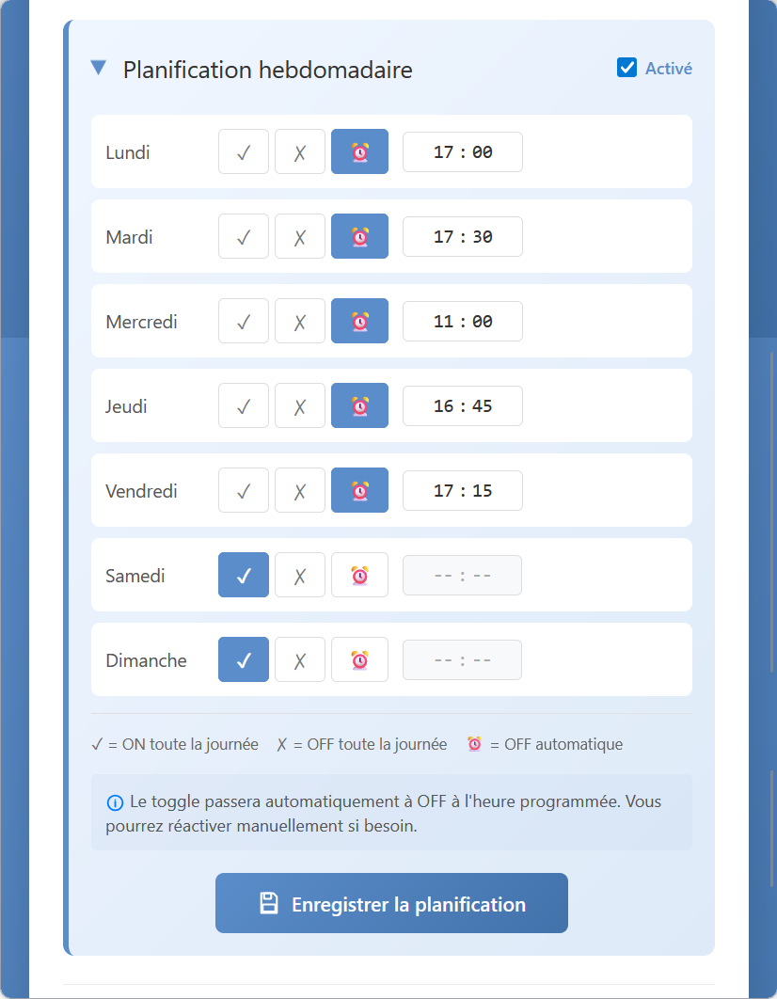

Le popup est la porte d'entrée de Go2Econtact dans Thunderbird. Cliquez sur l'icône de l'extension dans la barre d'outils pour l'ouvrir. Il donne accès aux paramètres et affiche l'état de l'extension en un coup d'œil.

Activer / désactiver l'extension
Le bouton bascule en haut du popup permet de suspendre Go2Econtact pour la session en cours. Décochez-le pour arrêter temporairement la création d'accusés de réception.
Planification — Aujourd'hui
La section Aujourd'hui affiche le jour en cours et le mode de fonctionnement prévu selon votre planification hebdomadaire :
- ✓ ON toute la journée — l'extension fonctionne en continu
- ✗ OFF toute la journée — l'extension est désactivée
- ⏰ OFF automatique à [heure] — l'extension s'arrêtera à l'heure prévue
Le bouton Ajuster pour aujourd'hui permet de modifier ponctuellement ce comportement sans toucher à la planification hebdomadaire. L'ajustement ne vaut que pour la journée en cours.

Planification hebdomadaire
La section Planification hebdomadaire est repliable. Elle permet de configurer le comportement de l'extension pour chaque jour de la semaine.
Un bouton bascule active ou désactive l'ensemble du planificateur. Quand il est désactivé, l'extension fonctionne en continu sans arrêt automatique.
Trois modes par jour
- ✓ ON toute la journée — fonctionnement continu (typiquement le week-end)
- ✗ OFF toute la journée — extension désactivée pour la journée
- ⏰ OFF automatique — le bascule passe à OFF à l'heure choisie. Vous pouvez le réactiver manuellement si besoin.
- Lundi à jeudi : ⏰ OFF automatique à 17:00
- Vendredi : ⏰ OFF automatique à 16:00
- Samedi et dimanche : ✓ ON toute la journée
Cliquez sur Enregistrer la planification pour valider vos réglages.
